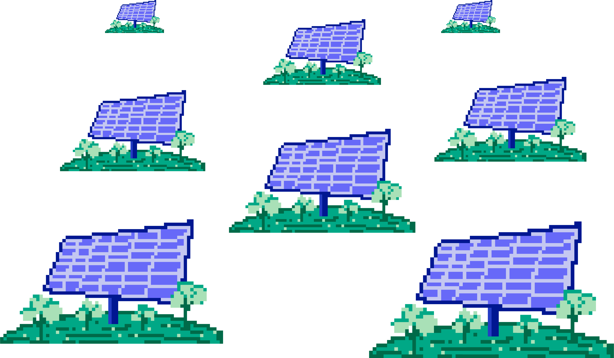

<!DOCTYPE html>
<html xmlns="http://www.w3.org/1999/xhtml" lang=""></html>
  <head>
    <meta charset="utf-8" />
    <meta name="viewport" content="width=device-width, initial-scale=1.0" />
<title>Предлог пројекта - Соларна електрана &#8212; Петља - Пројектни задаци за шести разред - рачунарство</title>
    <link rel="stylesheet" href="_static/pygments.css" type="text/css" />
    <link rel="stylesheet" href="_static/basic.css" type="text/css" />
    <link rel="stylesheet" type="text/css" href="_static/activecode.css" />
    <link rel="stylesheet" type="text/css" href="_static/codemirror.css" />
    <link rel="stylesheet" type="text/css" href="_static/qchoice.css" />
    <link rel="stylesheet" type="text/css" href="_static/clickable.css" />
    <link rel="stylesheet" type="text/css" href="_static/pytutor.css" />
    <link rel="stylesheet" type="text/css" href="_static/modal-basic.css" />
    <link rel="stylesheet" type="text/css" href="_static/datafile.css" />
    <link rel="stylesheet" type="text/css" href="_static/dragndrop.css" />
    <link rel="stylesheet" type="text/css" href="_static/fitb.css" />
    <link rel="stylesheet" type="text/css" href="_static/matrixeq.css" />
    <link rel="stylesheet" type="text/css" href="_static/parsons.css" />
    <link rel="stylesheet" type="text/css" href="_static/lib/prettify.css" />
    <link rel="stylesheet" type="text/css" href="_static/poll.css" />
    <link rel="stylesheet" type="text/css" href="_static/showEval.css" />
    <link rel="stylesheet" type="text/css" href="_static/tabbedstuff.css" />
    <link rel="stylesheet" type="text/css" href="https://stackpath.bootstrapcdn.com/bootstrap/4.2.1/css/bootstrap.min.css" />
    <link rel="stylesheet" type="text/css" href="_static/video.css" />
    <link rel="stylesheet" type="text/css" href="_static/webgldemo.css" />
    <link rel="stylesheet" type="text/css" href="_static/webglinteractive.css" />
    <link rel="stylesheet" type="text/css" href="_static/karel.css" />
    <link rel="stylesheet" type="text/css" href="_static/notes.css" />
    <link rel="stylesheet" type="text/css" href="_static/gallery.css" />
    <link rel="stylesheet" type="text/css" href="_static/associations.css" />
    <link rel="stylesheet" type="text/css" href="_static/editor.css" />
    <link rel="stylesheet" href="_static/user-highlights.css" type="text/css" />
    <link rel="stylesheet" href="https://use.fontawesome.com/releases/v5.1.1/css/all.css" type="text/css" />
    <link rel="stylesheet" href="_static/bootstrap-4.0.0-dist/css/bootstrap.min.css" type="text/css" />
    <link rel="stylesheet" href="_static/flatly.min.css" type="text/css" />
    <link rel="stylesheet" href="_static/petlja-runestone.css" type="text/css" />
    <script id="documentation_options" data-url_root="./" src="_static/documentation_options.js"></script>
    <script type="text/javascript" src="_static/runestonebase.js"></script>
    <script type="text/javascript" src="_static/skulpt.min.js"></script>
    <script type="text/javascript" src="_static/skulpt-stdlib.js"></script>
    <script type="text/javascript" src="_static/jquery.js"></script>
    <script type="text/javascript" src="_static/underscore.js"></script>
    <script type="text/javascript" src="_static/doctools.js"></script>
    <script type="text/javascript" src="_static/language_data.js"></script>
    <script type="text/javascript" src="_static/jquery.highlight.js"></script>
    <script type="text/javascript" src="_static/bookfuncs.js"></script>
    <script type="text/javascript" src="_static/codemirror.js"></script>
    <script type="text/javascript" src="_static/xml.js"></script>
    <script type="text/javascript" src="_static/css.js"></script>
    <script type="text/javascript" src="_static/python.js"></script>
    <script type="text/javascript" src="_static/htmlmixed.js"></script>
    <script type="text/javascript" src="_static/javascript.js"></script>
    <script type="text/javascript" src="_static/jquery_i18n/CLDRPluralRuleParser.js"></script>
    <script type="text/javascript" src="_static/jquery_i18n/jquery.i18n.js"></script>
    <script type="text/javascript" src="_static/jquery_i18n/jquery.i18n.messagestore.js"></script>
    <script type="text/javascript" src="_static/jquery_i18n/jquery.i18n.fallbacks.js"></script>
    <script type="text/javascript" src="_static/jquery_i18n/jquery.i18n.language.js"></script>
    <script type="text/javascript" src="_static/jquery_i18n/jquery.i18n.parser.js"></script>
    <script type="text/javascript" src="_static/jquery_i18n/jquery.i18n.emitter.js"></script>
    <script type="text/javascript" src="_static/jquery_i18n/jquery.i18n.emitter.bidi.js"></script>
    <script type="text/javascript" src="_static/activecode-i18n.en.js"></script>
    <script type="text/javascript" src="_static/activecode.js"></script>
    <script type="text/javascript" src="_static/clike.js"></script>
    <script type="text/javascript" src="_static/timed_activecode.js"></script>
    <script type="text/javascript" src="_static/animationbase.js"></script>
    <script type="text/javascript" src="_static/mchoice.js"></script>
    <script type="text/javascript" src="_static/timedmc.js"></script>
    <script type="text/javascript" src="_static/timed.js"></script>
    <script type="text/javascript" src="_static/mchoice-i18n.en.js"></script>
    <script type="text/javascript" src="_static/clickable.js"></script>
    <script type="text/javascript" src="_static/timedclickable.js"></script>
    <script type="text/javascript" src="_static/d3.v2.min.js"></script>
    <script type="text/javascript" src="_static/jquery.ba-bbq.min.js"></script>
    <script type="text/javascript" src="_static/jquery.jsPlumb-1.3.10-all-min.js"></script>
    <script type="text/javascript" src="_static/pytutor.js"></script>
    <script type="text/javascript" src="_static/codelens.js"></script>
    <script type="text/javascript" src="_static/skulpt.min.js"></script>
    <script type="text/javascript" src="_static/skulpt-stdlib.js"></script>
    <script type="text/javascript" src="_static/datafile.js"></script>
    <script type="text/javascript" src="_static/dragndrop.js"></script>
    <script type="text/javascript" src="_static/timeddnd.js"></script>
    <script type="text/javascript" src="_static/dragndrop-i18n.en.js"></script>
    <script type="text/javascript" src="_static/fitb.js"></script>
    <script type="text/javascript" src="_static/timedfitb.js"></script>
    <script type="text/javascript" src="_static/fitb-i18n.en.js"></script>
    <script type="text/javascript" src="_static/matrixeq.js"></script>
    <script type="text/javascript" src="_static/lib/prettify.js"></script>
    <script type="text/javascript" src="_static/lib/hammer.min.js"></script>
    <script type="text/javascript" src="_static/parsons.js"></script>
    <script type="text/javascript" src="_static/parsons-i18n.en.js"></script>
    <script type="text/javascript" src="_static/timedparsons.js"></script>
    <script type="text/javascript" src="_static/poll.js"></script>
    <script type="text/javascript" src="_static/reveal.js"></script>
    <script type="text/javascript" src="_static/shortanswer.js"></script>
    <script type="text/javascript" src="_static/timed_shortanswer.js"></script>
    <script type="text/javascript" src="_static/showEval.js"></script>
    <script type="text/javascript" src="_static/tabbedstuff.js"></script>
    <script type="text/javascript" src="_static/runestonevideo.js"></script>
    <script type="text/javascript" src="_static/webglinteractive.js"></script>
    <script type="text/javascript" src="_static/FileSaver.min.js"></script>
    <script type="text/javascript" src="_static/Blob.js"></script>
    <script type="text/javascript" src="_static/karelCorner.js"></script>
    <script type="text/javascript" src="_static/karelRobot.js"></script>
    <script type="text/javascript" src="_static/karelWorld.js"></script>
    <script type="text/javascript" src="_static/karelChat.js"></script>
    <script type="text/javascript" src="_static/karelRobotDrawer.js"></script>
    <script type="text/javascript" src="_static/karelUI.js"></script>
    <script type="text/javascript" src="_static/karel.js"></script>
    <script type="text/javascript" src="_static/karel-i18n.en.js"></script>
    <script type="text/javascript" src="_static/notes.js"></script>
    <script type="text/javascript" src="_static/pygamelib-init.js"></script>
    <script type="text/javascript" src="_static/gallery.js"></script>
    <script type="text/javascript" src="_static/associations.js"></script>
    <script type="text/javascript" src="_static/associations-i18n.en.js"></script>
    <script type="text/javascript" src="_static/editor.js"></script>
    <script type="text/javascript" src="_static/jszip.js"></script>
    <script type="text/javascript" src="_static/editor-i18n.en.js"></script>
    <script type="text/javascript" src="_static/jquery-ui-1.10.3.custom.min.js"></script>
    <script type="text/javascript" src="_static/jquery-fix.js"></script>
    <script type="text/javascript" src="_static/bootstrap-4.0.0-dist/js/bootstrap.min.js"></script>
    <script type="text/javascript" src="_static/bootstrap-4.0.0-dist/js/bootstrap.bundle.min.js"></script>
    <script type="text/javascript" src="_static/bootstrap-sphinx.js"></script>
    <script type="text/javascript" src="_static/waypoints.min.js"></script>
    <script type="text/javascript" src="_static/rangy-core.js"></script>
    <script type="text/javascript" src="_static/rangy-textrange.js"></script>
    <script type="text/javascript" src="_static/rangy-cssclassapplier.js"></script>
    <script type="text/javascript" src="_static/user-highlights.js"></script>
    <script type="text/javascript" src="_static/jquery.idle-timer.js"></script>
    <script type="text/javascript" src="_static/processing-1.4.1.min.js"></script>
    <script type="text/javascript" src="_static/jquery.hotkey.js"></script>
    <script type="text/javascript" src="_static/jquery-migrate-1.2.1.min.js"></script>
    <script type="text/javascript" src="_static/petlja_ruenstone.js"></script>
    <link rel="index" title="Index" href="genindex.html" />
    <link rel="search" title="Search" href="search.html" />
    <link rel="prev" title="Предлог пројекта - Рециклажа" href="reciklaza.html" />
    <meta charset='utf-8'>
    <meta http-equiv='X-UA-Compatible' content='IE=edge,chrome=1'>
    <meta content='width=device-width, initial-scale=1.0, maximum-scale=1.0, user-scalable=0' name='viewport' />
    <script type="text/javascript">
      eBookConfig = {};
      eBookConfig.host = 'http://127.0.0.1:8000' ? 'http://127.0.0.1:8000' : 'http://127.0.0.1:8000';
      eBookConfig.app = eBookConfig.host + '/runestone';
      eBookConfig.ajaxURL = eBookConfig.app + '/ajax/';
      eBookConfig.course = '5_projzad_racunarstvo_scratch';
      eBookConfig.logLevel = '0';
      eBookConfig.loginRequired = 'false';
      eBookConfig.build_info = "";
      eBookConfig.isLoggedIn = false;
      eBookConfig.useRunestoneServices = false;
      eBookConfig.python3 = true;
      eBookConfig.basecourse = '5_projzad_racunarstvo_scratch';
      eBookConfig.runestone_version = '';
      eBookConfig.imagesDir = '_images/';
      eBookConfig.staticDir = '_static/';
      if (typeof (Sk) != "undefined")
        Sk.imgPath = eBookConfig.imagesDir;
    </script>

  </head><body>


<!-- Begin navbar -->

<nav id="navbar" class="navbar navbar-default navbar-fixed-top" role="navigation">

  <div class="container">

    <div class="navbar-header" style="width: 10%;margin-top: 20px;">
      <button type="button" class="navbar-toggle collapsed" data-toggle="collapse" data-target="#bs-example-navbar-collapse-1">
        <span class="sr-only">Toggle navigation</span>
        <span class="icon-bar"></span>
        <span class="icon-bar"></span>
        <span class="icon-bar"></span>
      </button>
      
    </div>

    <div class="collapse navbar-collapse" id="bs-example-navbar-collapse-1" style="margin-top: 10px; margin-left: 25px;">
      <ul class="nav navbar-nav " style="width: 90%;">
        <li class="active"><a style="text-align: center;" href="./">Петља - Пројектни задаци за шести разред - рачунарство</a></li>
      </ul>
    </div>
  </div>
</nav>


<div class="container col-md-12" id="continue-reading"></div>

<div class="container col-md-8 col-md-offset-2" id="main-content" style="margin-top: 100px;">
  
  <div class="section" id="id1">
<h1>Предлог пројекта - Соларна електрана<a class="headerlink" href="#id1" title="Permalink to this headline">¶</a></h1>
<div class="section" id="id2">
<h2>Мотивација<a class="headerlink" href="#id2" title="Permalink to this headline">¶</a></h2>
<a class="reference internal image-reference" href="_images/Solar_energy.png"></a>
<p>Овим пројектом желимо да подигнемо свест о значају еколошке производње енергије данас. Сви знамо да је на нашој планети
све већа потреба за енергијом која покреће фабрике, греје наше домове, покреће возила итд.</p>
<p>Да ли сте приметили соларну електрану (било велику или малу) у вашем окружењу?
Соларне електране претварају
енергију Сунца у електричну енергију и при томе не загађују животну средину. Могу се постављати на кровове кућа, великих
зграда као и на површину земље или чак воде. Спадају у обновљиве изворе енергије јер Сунце сија много дана у години, само је питање како то
што нам свемир поклања да искористимо!</p>

    <div class="note-wrapper infonote-type">
        <div class="note-icon-holder"> </div>
         
        <div class="course-content">
            
<p>Главни циљ овог пројекта је да направиш програм, који омогућава унос максималне производње соларне електране у
киловатима
(kW) и угла под којим Сунчеви зраци падају на плоче електране. Ако знамо да електана достиже свој пун капацитет
када зраци падају под углом од 90 степени, користити пропорцију за рачунање и испис на екран тренутне производње
у киловатима (kW) и у процентима (%).</p>

    </div></div>
</div>
<div class="section" id="id3">
<h2>Сценарио пројекта<a class="headerlink" href="#id3" title="Permalink to this headline">¶</a></h2>
<p>Проналажењем информација на интернету ученици праве презентацију о обновљивим изворима енергије.
Проналазе  податке о броју сунчаних дана по месецима у Србији као и у неколико земаља по свом избору.
Упоређују прикупљене податке.
Праве пано о значају обновљивих извора енергије и каче га на огласну таблу у школи.</p>
<p>Ученици праве програм који прерачунава тренутну производњу соларне електране у киловатима и процентуално.</p>
</div>
<div class="section" id="id4">
<h2>Анализа и планирање<a class="headerlink" href="#id4" title="Permalink to this headline">¶</a></h2>
<div class="section" id="id5">
<h3>Ресурси<a class="headerlink" href="#id5" title="Permalink to this headline">¶</a></h3>
<p>За прављење презентације потребан вам је рачунарски кабинет и интернет.
За реализацију овог пројекта поразговарајте са својим наставницима, првенствено наставником технике и технологије,
физике и математике који вас могу детаљније упутити. У значај производње чисте енергије може вас
упутити наставник биологије.
Напишите неки чланак, направите неки пано, посветите неки час овој теми.</p>
</div>
<div class="section" id="id6">
<h3>Код, променљиве<a class="headerlink" href="#id6" title="Permalink to this headline">¶</a></h3>
<p>Један од начина да се напише код је следећи:</p>
<div class="highlight-default notranslate"><div class="highlight"><pre><span></span>alfa = int(input(&quot;Pod kojim uglom suncev zrak pada na kolektor &gt;&gt; &quot;))
snaga = int(input(&quot;Kolika je snaga elektrane u kilovatima (kW) &gt;&gt; &quot;))

procenat = ???
trenutna_snaga = ???

print(&quot;Elektrana trenutno radi na &quot; + ??? + &quot;% kapaciteta i proizvodi &quot; + ??? +&quot;kW&quot;)
</pre></div>
</div>
<p>Можете допунити овај код на потребним местима, или можете писати свој програм из почетка.
За рачунање процента и тренутне снаге коју електрана производи било би лепо када бисте написали
функције које рачунају ове две вредности, то би ваш програм учинило да изгледа професионалније урађен.
У том случају, писање једне функције би могао бити посао за једног члана пројектног тима,
а друге за другог док би остатак програма у коме би био и њихов позив рецимо био посао трећег члана.
Овакав рад на програму назива се модуларан рад и примењује се на пројектима у ИТ компанијама!</p>

    <div class="note-wrapper infonote-type">
        <div class="note-icon-holder"> </div>
         
        <div class="course-content">
            
<p>Ако вам се то учини компликовано можете потражити помоћ наставника,
али потпуно је у реду и ако урадите рачунање без дефинисање и позива функција.</p>

    </div></div>
<p>Потрудите се да ти резултати буду заокружени на целе бројеве. То ћете постићи тако што ћете
на интернету претражити <em>function round in python</em> а затим применити то што сте пронашли у вашем програму.
За ову активност биће потребно мало знања из енглеског језика.
Претрага на интернету је такође веома
важна и веома честа активност чланова пројектног тима на пројектима у ИТ компанијама.</p>

    <div class="note-wrapper infonote-type">
        <div class="note-icon-holder"> </div>
         
        <div class="course-content">
            
<p>Такође, ако вам се то учини компликовано можете потражити помоћ наставника,
али потпуно је у реду и ако резултати буду релни бројеви на више децимала.</p>

    </div></div>
</div>
</div>
<div class="section" id="id7">
<h2>Самоевалуација<a class="headerlink" href="#id7" title="Permalink to this headline">¶</a></h2>
<p>Када направиш програм, покушај да (пре свега себи) одговориш на ова питања:</p>
<ul class="simple">
<li><p>Да ли је, по твојој процени, пројекат успешно приведен крају? Колико си ти лично задовољан-задовољна урађеним? Зашто?</p></li>
<li><p>Који део је био посебно тежак? Како си га решио-решила? Да ли је постојао неки проблем чијим решавањем се посебно поносиш?</p></li>
<li><p>Да ли је било накнадних измена првобитног плана? Због чега?</p></li>
<li><p>Да ли је пројекат био користан за стицање или унапређивање неких знања или вештина? Којих?</p></li>
</ul>
<p>Размисли шта од овога би било интересантно другима да чују током твог представљања пројекта.</p>
</div>
</div>


  
      <div class="col-md-12">
<ul class="pager">
        <li id="relations-prev" title='Previous chapter - Предлог пројекта - Рециклажа' data-toggle="tooltip"><a href="reciklaza.html">Previous chapter</a></li>
    
</ul>

<!-- <ul class="pager"> -->
    <!-- -->
        <!-- <li id="relations-prev" title='Претходно поглавље - Предлог пројекта - Рециклажа' data-toggle="tooltip"><a href="reciklaza.html">Претходно поглавље</a></li> -->
    <!--  -->
    <!-- -->
<!-- </ul> -->

<script type="text/javascript">

  $('#relations-prev').tooltip({'placement':'right', 'selector': '', 'delay': { show: 100, hide: 50}});
  $('#relations-next').tooltip({'placement':'left', 'selector': '', 'delay': { show: 100, hide: 50}});

</script>
</div>
  
</div>
<footer class="footer col-md-12">
    <div class="container">
        <div class="text-center">
            <hr>
            <p class="text-muted">
                <span class="pull-left">&copy; 2022 Petlja (Created using  <a href="https://pypi.org/project/Sphinx/">Swinx</a>, <a href="http://runestoneinteractive.org/">RunestoneComponents</a> and <a href="https://github.com/Petlja/PetljaDoc">PetljaDoc</a>)</span>
            </p>
        </div>
    </div>
</footer>


<script type="text/javascript">
  var _gaq = _gaq || [];
  _gaq.push(['_setAccount', 'UA-32029811-1']);
  _gaq.push(['_trackPageview']);

  (function() {
    var ga = document.createElement('script'); ga.type = 'text/javascript'; ga.async = true;
    ga.src = ('https:' == document.location.protocol ? 'https://ssl' : 'http://www') + '.google-analytics.com/ga.js';
    var s = document.getElementsByTagName('script')[0]; s.parentNode.insertBefore(ga, s);
  })();
</script>


  </body>
</html>